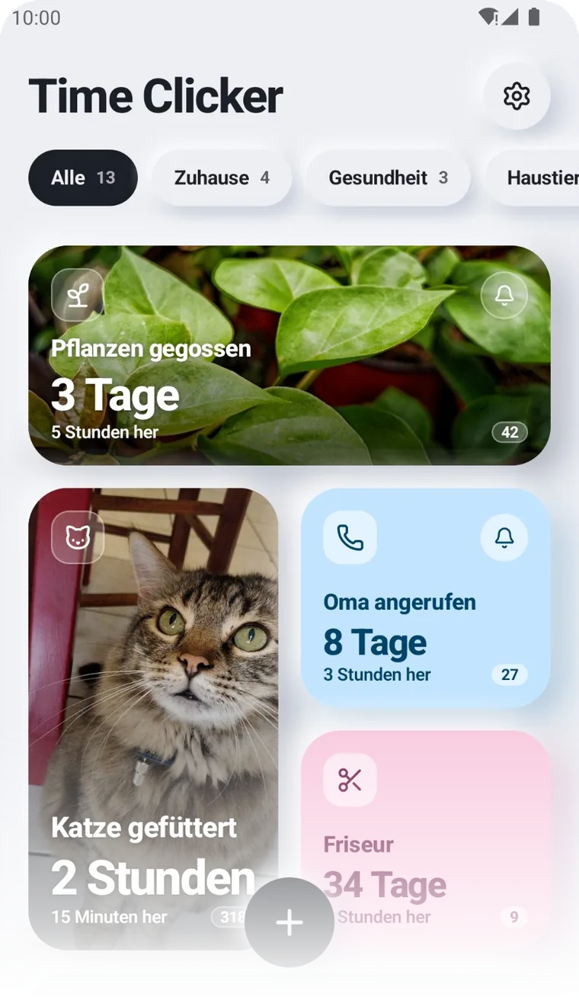
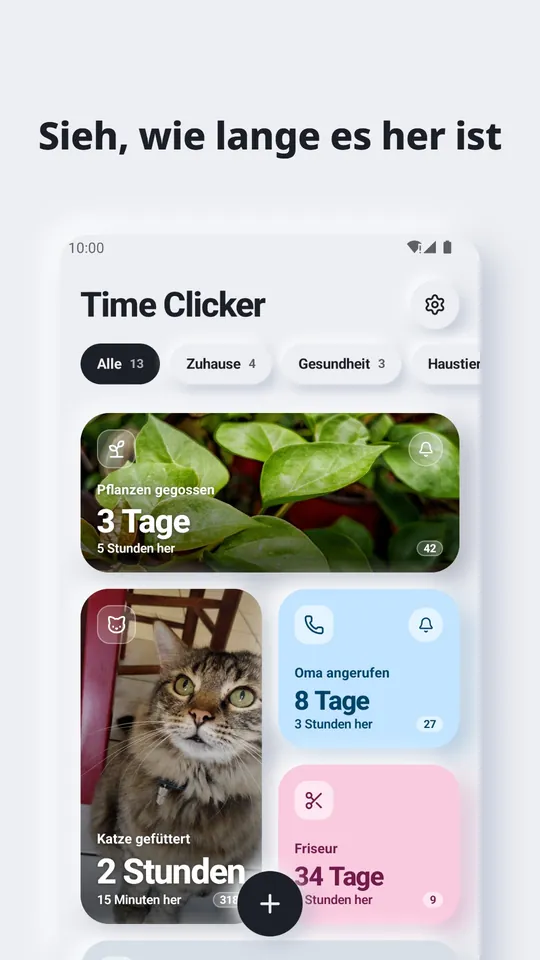
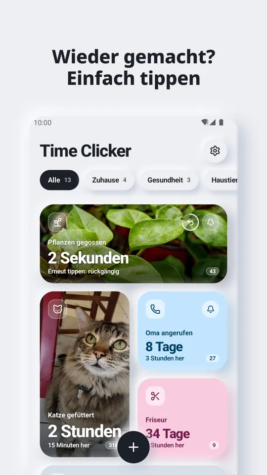
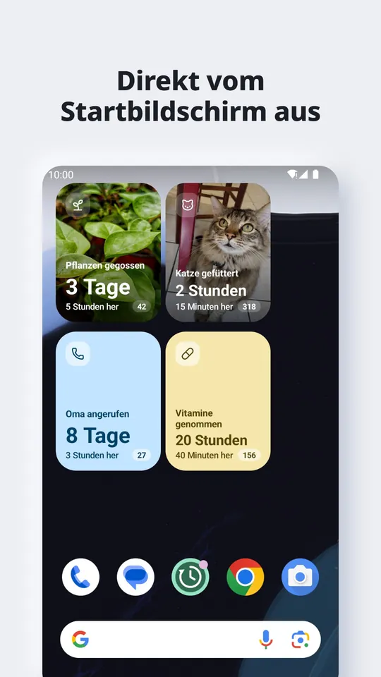
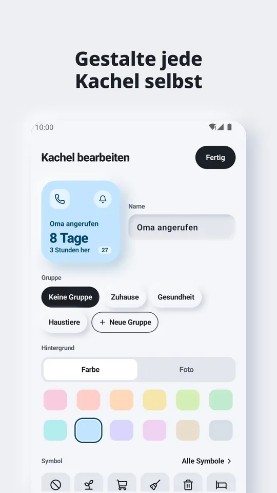
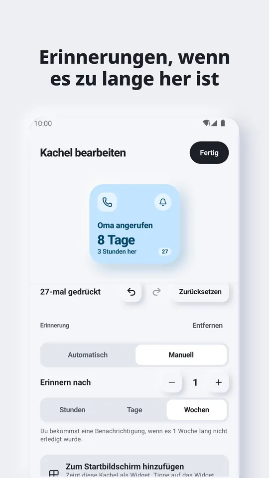
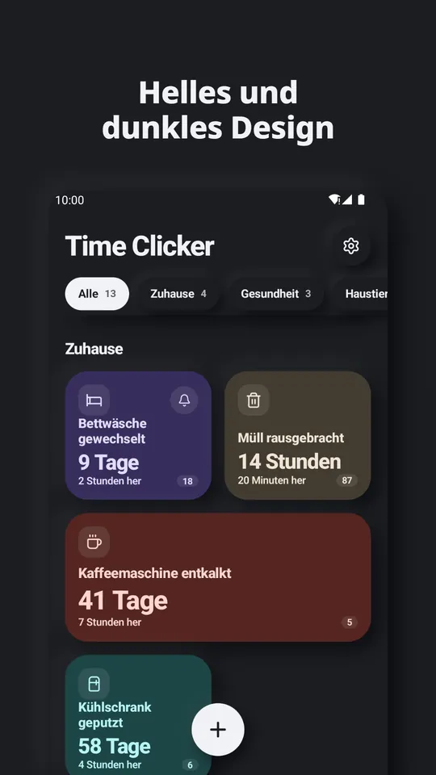

Wie lange ist es her?
Jede Kachel zeigt live, wie lange es her ist, dass du etwas gemacht hast. Tippe darauf, wenn du es wieder machst.

Funktionen
Ein Tipp genügt
Tippe auf eine Kachel, um sie als erledigt zu markieren. Aus Versehen getippt? Tippe innerhalb von 10 Sekunden erneut, um es rückgängig zu machen.
Gruppen
Sortiere Kacheln in Gruppen wie Zuhause, Gesundheit oder Haustiere und wische zwischen ihnen hin und her.
Erinnerungen
Lass dich benachrichtigen, wenn etwas eine Weile nicht gemacht wurde.
Widgets
Lege jede beliebige Kachel auf deinen Startbildschirm und tippe direkt dort darauf.
Ganz nach deinem Geschmack
Farben, Fotos, rund 1.900 Symbole, drei Kachelgrößen.
Material You
Helles und dunkles Design, ab Android 12 in den Farben deines Systems.
16 Sprachen
Von Englisch und Französisch bis Japanisch und Arabisch.
Komplett offline
Kein Konto, kein Tracking. Deine Daten bleiben auf deinem Handy; exportiere sie in eine einzige Datei.
Screenshots






Time Clicker herunterladen
Kostenlos, ohne Werbung, ohne Konto. Ab Android 8.0.